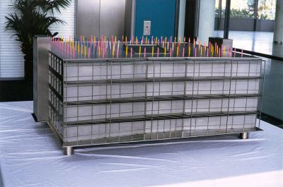
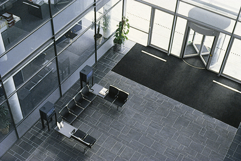

The building of four new commercial buildings, The World Business Centre, Heathrow,
that accommodates airport related business, generated two exciting opportunities
for artists to create permanent works in the foyer spaces.
Architects: Bennetts Associates.
John Newling's permanent work 'Duration of a Wish' is a sculptural work, a photographic installation and a performance that took place at the launch of the work.

A second video work and sound installation was created by Matthew Dalziel and Louise Scullion. Two monitors display footage of an endless sea journey whilst all around birdcalls of migratory birds pan across the main atrium.

 Photography:
the artists
Photography:
the artists